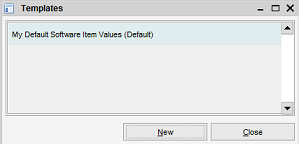
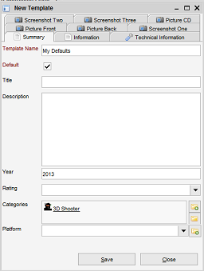
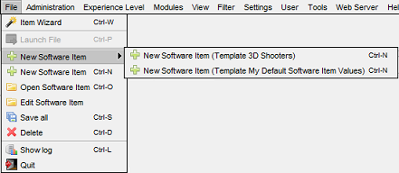

Templates
Menu Path: Administration > Maintain Templates
In case you want to assign certain default values to newly created items you can define these values in a template.
The template functionality can be found in the "administration" menu.

Press "New" to create a new template. The item form is opened.

You'll notice the item form is just the same
as for a normal item with exception of the "default" and the "template name" field. The template name pretty
much speaks for itself. The name field is always required to be
filled and the name needs to be unique. Fill the values you want to be assigned to items using this template
and press "save". The template is ready to be used!
Default template
A template marked as the default template is always used for creating a new item. There can be zero or one
default templates.
Using non-default templates
A default template is always used, but what if you want to use a non-default template? After a template has been
defined the menu bar is updated and the template is made available.

Go to the "file" menu and find a "new item" sub-menu. This
sub-menu contains all defined templates. Select one of the templates to create a new item using this template.
Deleting a template
Select a template in the list, perform a right-click, select "delete" from the menu.
Updating a template
Double-click an item in the list to open it. Modify the values, the default setting or the template name and
press "Save".